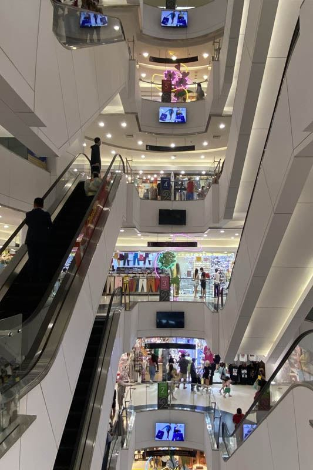
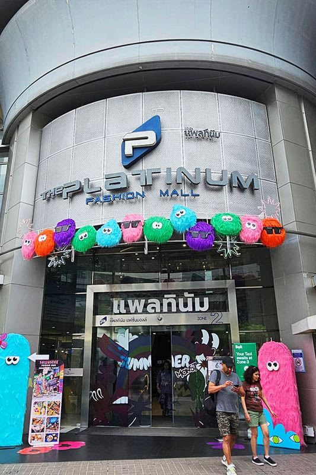

Pratunam Market represents Bangkok's ultimate wholesale fashion destination, a massive shopping district that serves as the epicenter of Thailand's fashion trade. Located just 2 BTS stops from Royal Ivory + walking Hotel, this sprawling area offers the best fashion prices in Bangkok through authentic wholesale shopping experiences.
What makes Pratunam extraordinary is its genuine wholesale atmosphere and unbeatable prices. Unlike tourist-focused shopping areas, Pratunam serves real fashion retailers, offering the same wholesale prices that stock boutiques across Southeast Asia. Shoppers can find the latest Asian fashion trends at 50-90% below retail prices.
For Royal Ivory Hotel guests, Pratunam provides access to Bangkok's fashion trade secrets. Whether you're stocking a boutique, seeking quantity discounts, or simply want the best fashion bargains in the city, Pratunam offers authentic wholesale experiences that few tourists ever discover.
Pratunam Market is accessible via BTS with a transfer at Siam station, or by direct taxi for convenience. The area is large, so understanding the layout helps plan your wholesale shopping strategy effectively.
Total Cost: 90 Baht one-way | Journey Time: 15-20 minutes | Transfers: 1 at Siam station
🛍️ Royal Ivory Wholesale Strategy: Plan a full morning at Pratunam (09:00-14:00) for best wholesale prices and selection. Bring cash, empty luggage for purchases, and comfortable walking shoes. The area is massive - focus on specific sections rather than trying to see everything.
Pratunam Market encompasses multiple venues, each with distinct characteristics and specialties. Understanding the different areas helps maximize your wholesale shopping efficiency and ensures you find the best deals for your specific needs.
| Venue | Specialties | Best Times | Price Range |
|---|---|---|---|
| 🏢 Platinum Fashion Mall | 7-floor wholesale center, trendy fashion | 08:00-12:00 for bulk prices | Wholesale 100-500฿ |
| 🏬 Indra Square | Traditional market, local styles | 09:00-15:00 daily | Budget 80-400฿ |
| 🛍️ Street Markets | Accessories, shoes, street fashion | 10:00-18:00 peak | Bargain 50-300฿ |
| 🏪 Wholesale Shops | Bulk fashion, retailer focused | Morning hours best | Lowest 30-200฿ |

Success at Pratunam requires understanding wholesale buying culture and quantity pricing structures. Unlike retail shopping, wholesale markets operate on volume discounts, minimum quantities, and business-to-business relationships.
Professional wholesale buying at Pratunam requires patience, quantity planning, and understanding of fashion trade practices. Many vendors prefer dealing with serious buyers who understand bulk purchasing and business relationships.
Bring cash: Wholesale deals are cash-only for best prices
Quality inspection: Check items carefully, no returns policy
Size varieties: Request size breakdowns for clothing
Seasonal timing: End-of-season clearances offer extreme discounts
Pratunam Market offers comprehensive fashion coverage across all categories, from trendy Asian styles to classic designs. Understanding the specialties helps locate the best deals in each category.
🎒 Accessory Categories:
Handbags: Designer-inspired bags at fraction of retail prices
Jewelry: Fashion jewelry, costume pieces, trendy accessories
Shoes: Sandals, heels, boots, sneakers in latest styles
Scarves & belts: Seasonal accessories in bulk quantities
Phone accessories: Cases, covers, tech fashion items
Pratunam operates on wholesale pricing structures where negotiation skills and quantity buying determine final costs. Understanding the pricing culture helps achieve the best possible deals in this competitive market.
| Quantity | Discount Level | Example: 500฿ Retail Item | Negotiation Room |
|---|---|---|---|
| 1 piece | Minimal discount | 400-450 Baht | Limited negotiation |
| 3-5 pieces | 20-30% off retail | 300-350 Baht each | Moderate bargaining |
| 6-12 pieces | 40-60% off retail | 200-250 Baht each | Strong negotiation |
| 12+ pieces | 60-80% off retail | 100-150 Baht each | Professional rates |
💰 Wholesale Transaction Guidelines:
Cash preferred: Best prices available only with cash payment
No returns: Inspect quality carefully, sales are final
Size planning: Understand size charts and fitting variations
Quality tiers: Different price points reflect different quality levels
From Royal Ivory Hotel: Take BTS Sukhumvit Line from Nana to Siam (2 stops), transfer to BTS Silom Line to Ratchathewi (1 stop). Walk 5-8 minutes to Pratunam area, or take taxi directly (15-25 minutes, 90-130 THB depending on traffic).
Pratunam Market operates daily 09:00-18:00 for wholesale hours. Platinum Fashion Mall: 08:00-20:00. Some street vendors and shops operate earlier and later. Best wholesale prices available during morning hours (09:00-12:00).
Pratunam offers wholesale prices 50-90% below retail, bulk buying discounts, latest Asian fashion trends, massive selection across multiple venues, and authentic wholesale atmosphere. It's Bangkok's largest fashion wholesale district with unbeatable prices for quantity purchases.
Yes, individuals can buy at wholesale prices, especially with bulk purchases (typically 3-12+ pieces for best prices). Single items available but bulk buying offers significant discounts. Many vendors offer mixed bulk deals for variety.
Bring 5,000-20,000 Baht cash for serious wholesale shopping. Bulk purchases of 10+ items can cost 2,000-8,000 Baht depending on categories. Single items: 100-800 Baht. Cash provides access to best wholesale pricing.
Success at Pratunam requires understanding the wholesale culture and professional buying practices. These insider tips help navigate the complex world of fashion wholesale and achieve the best possible deals.
Morning wholesale: Start at Pratunam for bulk fashion deals (09:00-13:00)
Afternoon luxury: Contrast with Siam Paragon luxury experience
Evening markets: End with Chatuchak for unique finds (weekends)
Budget comparison: Experience full spectrum of Bangkok shopping from wholesale to luxury